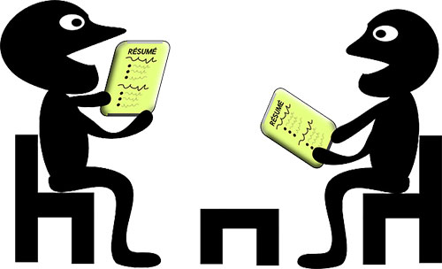
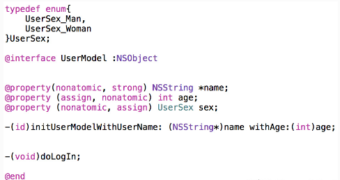

近一年内陆续面试了不少人了，从面试者到面试官的转变让我对 iOS 招聘有了更多的感受。经过了前段时间的一大波面试，我们终于找到了志同道合的小伙伴，面试也暂时告一段落了。总结下面试人过程中的感受，你也可以读到我们对简历、算法、性格、iOS 基础、底层知识的看法和一些常问的面试题。
一个靠谱的简历
简历非常能反映一个人的性格和水平，相比于你在学校获得多少奖项，工作经历、项目经历、熟悉的技术等更加关键，如果还有博客和一些 github 上的项目，好感度++，但记得在去面试前收拾下，我们真的会挨个文件 review 你的开源代码的。我们还喜欢关注一些细节，比如简历里关键字的拼写，看似无关紧要但很能反映出对自己的要求，经常见一个简历中 iOS 这三个字母的拼写就出现 IOS、iOS、ios 三种的，非常不能忍，再列举几个常见问题：
iPhone -> IPHONE IPhone
Xcode -> XCode xcode
Objective-C -> Object-C
JSON -> Json
HTTP -> Http
还有，注意中英文间用一个半角空格隔开，排版会漂亮很多，简历承载的不仅是内容，还有细节和态度，上面这些点往往都反映着面试者的代码风格、做事的认真程度。当然，简历写的很漂亮但面聊之后发现啥都不会的也有，甚至见过来面试上来就跟我说简历是假的，就想求个面试机会这种 - -
面试
别迟到，别迟到，别迟到，重要的事说三遍。有变动提前通知 HR，碰到过临时有事没来，和谁都不说一声，打电话过去还要求改个时间的，这种直接拜拜。
面试时最好准备纸、笔、简历，可能用不上，但很能体现认真程度。有条件的话带着 Mac 和源码，手机中装好所有在简历中出现的 App。
关于算法
我们是实用主义，iOS 开发中很少需要自己写复杂的算法，所以不在面试考核标准中。
代码规范
这是一个重点考察项，曾经在微博上发过一个风格纠错题：

也曾在面试时让人当场改过，槽点不少，能够有 10 处以上修改的就基本达到标准了（处女座的人在这方面表现都很优秀）
一个区分度很大的面试题
考察一个面试者基础咋样，基本上问一个 @property 就够了：
@property 后面可以有哪些修饰符？
什么情况使用 weak 关键字，相比 assign 有什么不同？
怎么用 copy 关键字？
这个写法会出什么问题： @property (copy) NSMutableArray *array;
如何让自己的类用 copy 修饰符？如何重写带 copy 关键字的 setter？
这一套问题区分度比较大，如果上面的问题都能回答正确，可以延伸问更深入点的：
@property 的本质是什么？ivar、getter、setter 是如何生成并添加到这个类中的
@protocol 和 category 中如何使用 @property
runtime 如何实现 weak 属性
每个人擅长的领域不一样，我们一般会从简历上找自己写擅长的技术聊，假如自己并不是很熟，最好别写出来或扯出来，万一面试官刚好非常精通这里就露馅了。
Checklist
总结过些面试题，没坚持下去，后来把这些当 checklist，面试的时候实在没话聊的时候做个提醒，语言、框架、运行机制性质的：
[※]@property中有哪些属性关键字？
[※]weak属性需要在dealloc中置nil么？
[※※]@synthesize和@dynamic分别有什么作用？
[※※※]ARC下，不显示指定任何属性关键字时，默认的关键字都有哪些？
[※※※]用@property声明的NSString（或NSArray，NSDictionary）经常使用copy关键字，为什么？如果改用strong关键字，可能造成什么问题？
[※※※]@synthesize合成实例变量的规则是什么？假如property名为foo，存在一个名为_foo的实例变量，那么还会自动合成新变量么？
[※※※※※]在有了自动合成属性实例变量之后，@synthesize还有哪些使用场景？
[※※]objc中向一个nil对象发送消息将会发生什么？
[※※※]objc中向一个对象发送消息[obj foo]和objc_msgSend()函数之间有什么关系？
[※※※]什么时候会报unrecognized selector的异常？
[※※※※]一个objc对象如何进行内存布局？（考虑有父类的情况）
[※※※※]一个objc对象的isa的指针指向什么？有什么作用？
[※※※※]下面的代码输出什么？
@implementation Son : Father
- (id)init
{
self = [super init];
if (self) {
NSLog(@"%@", NSStringFromClass([self class]));
NSLog(@"%@", NSStringFromClass([super class]));
}
return self;
}
@end[※※※※]runtime如何通过selector找到对应的IMP地址？（分别考虑类方法和实例方法）
[※※※※]使用runtime Associate方法关联的对象，需要在主对象dealloc的时候释放么？
[※※※※※]objc中的类方法和实例方法有什么本质区别和联系？
[※※※※※]_objc_msgForward函数是做什么的，直接调用它将会发生什么？
[※※※※※]runtime如何实现weak变量的自动置nil？
[※※※※※]能否向编译后得到的类中增加实例变量？能否向运行时创建的类中添加实例变量？为什么？
[※※※]runloop和线程有什么关系？
[※※※]runloop的mode作用是什么？
[※※※※]以+ scheduledTimerWithTimeInterval...的方式触发的timer，在滑动页面上的列表时，timer会暂定回调，为什么？如何解决？
[※※※※※]猜想runloop内部是如何实现的？
[※]objc使用什么机制管理对象内存？
[※※※※]ARC通过什么方式帮助开发者管理内存？
[※※※※]不手动指定autoreleasepool的前提下，一个autorealese对象在什么时刻释放？（比如在一个vc的viewDidLoad中创建）
[※※※※]BAD_ACCESS在什么情况下出现？
[※※※※※]苹果是如何实现autoreleasepool的？
[※※]使用block时什么情况会发生引用循环，如何解决？
[※※]在block内如何修改block外部变量？
[※※※]使用系统的某些block api（如UIView的block版本写动画时），是否也考虑引用循环问题？
[※※]GCD的队列（dispatch_queue_t）分哪两种类型？
[※※※※]如何用GCD同步若干个异步调用？（如根据若干个url异步加载多张图片，然后在都下载完成后合成一张整图）
[※※※※]dispatch_barrier_async的作用是什么？
[※※※※※]苹果为什么要废弃dispatch_get_current_queue？
[※※※※※]以下代码运行结果如何？
- (void)viewDidLoad
{
[super viewDidLoad];
NSLog(@"1");
dispatch_sync(dispatch_get_main_queue(), ^{
NSLog(@"2");
});
NSLog(@"3");
}[※※]addObserver:forKeyPath:options:context:各个参数的作用分别是什么，observer中需要实现哪个方法才能获得KVO回调？
[※※※]如何手动触发一个value的KVO
[※※※]若一个类有实例变量NSString *_foo，调用setValue:forKey:时，可以以foo还是_foo作为key？
[※※※※]KVC的keyPath中的集合运算符如何使用？
[※※※※]KVC和KVO的keyPath一定是属性么？
[※※※※※]如何关闭默认的KVO的默认实现，并进入自定义的KVO实现？
[※※※※※]apple用什么方式实现对一个对象的KVO？
[※※]IBOutlet连出来的视图属性为什么可以被设置成weak?
[※※※※※]IB中User Defined Runtime Attributes如何使用？
[※※※]如何调试BAD_ACCESS错误
[※※※]lldb（gdb）常用的调试命令？
这些小题可以做为讨论的入口，根据面试者的回答再继续聊下去。其中一些题比较底层，是留给屌屌的面试者或者试探评级用的，一般情况并不是重点的考察内容。
业务能力
毕竟平常的工作内容不是 runtime、runloop，不怎么会用到底层的黑魔法，80% 的时间都是和搭建页面、写业务逻辑、网络请求打交道。
要求面试者能够熟练构建 UI，我会找一个面试者做过的页面让他分析下页面结构、约束或者 frame 布局的连法和计算方法；有时也会让面试者说说 UITableView 常用的几个 delegate 和 data source 代理方法，动态 Cell 高度计算什么的；接下来，在手机里随便找一个 App 的页面，让面试者当场说说如果是他写应该用哪些 UI 组件和布局方式等。问几个问题后就能大概了解业务能力了，我们这边重度使用 IB 和 AutoLayout，假如面试者依然使用代码码 UI 也到没关系，有“从良”意愿就很好~
程序架构和一些设计模式如果面试者自己觉得还不错的话也会聊聊，但跪求别说 Singleton 了，用的越多对水平就越表示怀疑。对设计模式自信的我一般问一个问题，抽象工厂模式在 Cocoa SDK 中哪些类中体现？
架构上 MVC 还是 MVVM 还是 MVP 神马的到是可以聊聊各自的见解，反正也没有正确答案，只要别搞的太离谱就行，比如有的人说网络请求和数据库的操作最好放到 UIView 的子类里面干。
网络请求、数据库等各家都有成熟的封装，基本知道咋用就行。除此之外，我们还会顺带的问下除了 iOS 开发外，还会什么其他编程语言、或者熟悉哪种脚本语言和 Terminal 操作等，甚至还问问是如何翻墙- -，相信这些技能都是很重要的。
性格
大家都是写程序的，没啥必要用奇怪的、很难的问题难为对方，更关键的还是性格，和 Team 的风格是不是和的来。一个心态良好的面试者需要有个平常心，不傲娇也不跪舔，表达要正常，经常遇到问一个问题后一两分钟一直处于沉思状态，一句话不说，交流像挤牙膏一样，很是憋屈；还有非常屌屌的，明明不懂仍然强行据理力争，镇得住面试官也罢，撞枪口上就别怪不客气了- - 。决定要不要一个人基本上聊 5 分钟就可以确定了，喜欢水到渠成的感觉，看对眼了挡都挡不住。
招聘告一段落，后面将会有更精彩的事情发生。最后，再次感谢大家的支持和对我的信任。